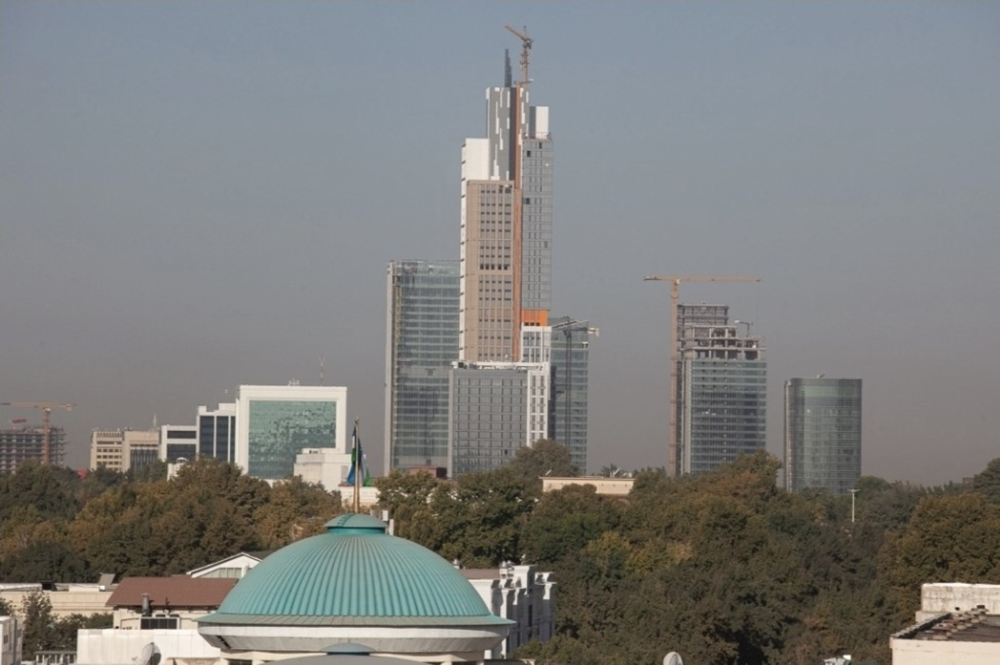

Pul o‘tkazmalari (remittances) nima va nega muhim: O‘zbekiston uchun ma’lumotnoma
Pul o‘tkazmasi nima, u qanday kanallar orqali yuboriladi, jahon miqyosi qanday va O‘zbekiston uchun raqamlar (Markaziy bank va Jahon banki ma’lumotlari) — faktlarga asoslangan ma’lumotnoma.

Pul o‘tkazmalari (remittances) — chet elda ishlayotgan migrantlar vatanidagi oilalariga yuboradigan pul. O‘zbekiston uchun bu — iqtisodiyotning eng yirik valyuta manbalaridan biri. Quyida bu tushuncha, uning qanday ishlashi va O‘zbekistonga oid raqamlar faqat tasdiqlangan manbalar asosida, fikrsiz bayon etiladi.
Pul o‘tkazmasi nima
Xalqaro me’yorlarda «shaxsiy pul o‘tkazmalari» (personal remittances) ikki qismdan iborat: rezident va norezident xonadonlar o‘rtasidagi shaxsiy o‘tkazmalar, hamda chet elda ishlaganlik uchun olingan ish haqi (soliqlardan tashqari). Oddiy qilib aytganda — bu odamdan-odamga, xonadonlarga tushadigan pul. U to‘g‘ridan-to‘g‘ri chet el sarmoyasi (FDI) yoki rasmiy yordamdan (ODA) farq qiladi: FDI korxona va loyihalarga, ODA hukumat va tashkilotlarga yo‘naltiriladi, o‘tkazmalar esa bevosita oilalarga boradi.
Rasmiy va norasmiy kanallar
Pul rasmiy kanallar orqali — banklar (SWIFT), maxsus pul o‘tkazish tizimlari (masalan, «Zolotaya Korona»/KoronaPay, Western Union, MoneyGram), karta-kartaga va mobil ilovalar orqali yuboriladi. Norasmiy kanallar — qo‘lda olib o‘tilgan naqd pul yoki norasmiy tarmoqlar — rasmiy statistikaga tushmaydi, shuning uchun haqiqiy hajm rasmiy raqamlardan yuqori bo‘lishi mumkin.
Nega muhim: jahon miqyosi
Jahon banki (KNOMAD) ma’lumotiga ko‘ra, 2024-yilda past va o‘rta daromadli davlatlarga pul o‘tkazmalari taxminan 685 milliard dollarga yetgan — bu ko‘rsatkich shu davlatlarga kiruvchi to‘g‘ridan-to‘g‘ri chet el sarmoyasi va rasmiy yordamning yig‘indisidan ko‘p. Eng yirik qabul qiluvchilar (2024): Hindiston (~129 mlrd), Meksika (~68 mlrd), Xitoy (~48 mlrd), Filippin (~40 mlrd), Pokiston (~33 mlrd dollar).
O‘zbekiston: raqamlar
O‘zbekiston Markaziy bankining «jismoniy shaxslarning transchegaraviy pul o‘tkazmalari» ma’lumotlariga ko‘ra, oxirgi yillarda o‘tkazmalar keskin o‘sdi. Eng katta sakrash 2022-yilda bo‘lgan; 2023-yilda ko‘rsatkich pasaydi, so‘ng yana o‘sdi.
- 2020: ~6,0 mlrd dollar
- 2021: 8,1 mlrd dollar
- 2022: 16,9 mlrd dollar (rekord, 2021-yilga nisbatan 2,1 barobar)
- 2023: 11,4 mlrd dollar (pasayish)
- 2024: 14,8 mlrd dollar (+29,8%)
- 2025: 18,9 mlrd dollar (Markaziy bank ma’lumoti, yangi rekord)
Muhim uslubiy izoh: Jahon banki «shaxsiy pul o‘tkazmalari»ni to‘lov balansi ta’rifi bo‘yicha hisoblaydi, Markaziy bank esa «jismoniy shaxslarning transchegaraviy o‘tkazmalari»ni beradi — shu bois ikki manbaning yillik yig‘indilari farq qilishi mumkin. Jahon banki bahosiga ko‘ra, o‘tkazmalar O‘zbekiston YaIMining 2022-yilda ~21%, 2023-yilda ~18% va 2024-yilda ~14% ga teng bo‘lgan — bu O‘zbekistonni dunyodagi eng o‘tkazmalarga bog‘liq iqtisodiyotlardan biriga aylantiradi.
Qayerdan keladi
Asosiy manba — Rossiya, lekin uning ulushi kamayib bormoqda: 2022-yilda ~85% dan 2024-yilda ~77% ga (~11,5 mlrd dollar) tushdi. Boshqa manbalar ulushi ortmoqda: Markaziy bank ma’lumotiga ko‘ra, 2024-yilda Qozog‘iston (~795 mln), AQSh (~577 mln), Janubiy Koreya (~534 mln), Turkiya (~405 mln) va Buyuk Britaniya (~135 mln dollar) yetakchi bo‘lgan. Aniq ulushlar chorakma-chorak o‘zgarib turadi.
Migrantlar soni
Migratsiya agentligi ma’lumotiga ko‘ra, 2023-yil oxirida chet elda 2 milliondan sal ko‘p O‘zbekiston fuqarosi bo‘lgan; 2024-yil oxiriga bu son ~1,35 millionga qisqargan. Rossiya rasmiylari (MVD) esa 2024-yil sentabrda Rossiyada ~1,8 million o‘zbekistonlik migrantni qayd etgan. Farq hisoblash usullariga bog‘liq (ro‘yxatdan o‘tgan mehnat migrantlari va umumiy mavjudlik).
Qanday yuboriladi va narxi
Rossiyadan yuborishda «Zolotaya Korona» (KoronaPay) tizimi asosiy vositalardan biri (bank hisobisiz, tezkor), shuningdek bank o‘tkazmalari qo‘llaniladi. Narx muhim: Jahon banki hisobiga ko‘ra, 2023-yil oxirida dunyoda 200 dollar yuborishning o‘rtacha narxi ~6,4% bo‘lgan — bu BMT Barqaror rivojlanish maqsadining 3% chegarasidan ikki barobar yuqori. Ammo Rossiya–O‘zbekiston yo‘nalishi dunyodagi eng arzon koridorlardan biri bo‘lib, u allaqachon 3% atrofida yoki undan past.
Xatarlar va kontekst
Bitta manbaga (Rossiya, ~77%) kuchli bog‘liqlik o‘tkazmalarni Rossiya iqtisodiyoti va rubl kursiga sezuvchan qiladi. Jahon banki 2023-yildagi pasayishni qisman zaif rubl, Rossiyadagi yuqori inflatsiya, so‘mning rublga nisbatan qadrlanishi va Rossiyadagi migrantlar sonining kamayishi bilan izohladi. Ko‘p o‘tkazmalar rublda topilib yuborilgani sababli, ularning dollardagi va so‘mdagi qiymati kurs o‘zgarishiga qarab tebranadi.
Eslatma
Yuqoridagilar — tasdiqlangan statistik faktlar bo‘lib, moliyaviy maslahat emas. Raqamlar manbaga qarab (Markaziy bank yoki Jahon banki) va davrga qarab farq qilishi mumkin; har biri tegishli manba nomi bilan keltirildi.
Manbalar
- World Bank — Remittances Slowed in 2023, Expected to Grow Faster in 2024
- World Bank / KNOMAD — Migration and Development Brief (Dec 2024)
- World Bank Open Data — Personal remittances received (% of GDP), Uzbekistan
- Gazeta.uz — Remittances to Uzbekistan reach nearly $15 billion in 2024 (CBU)
- Kun.uz — Remittances to Uzbekistan exceed $18.9 billion
- Gazeta.uz — Labor migrant count (Migration Agency)
- World Bank — Remittance Prices Worldwide